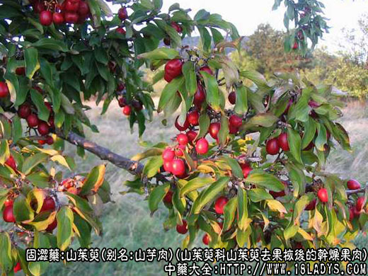
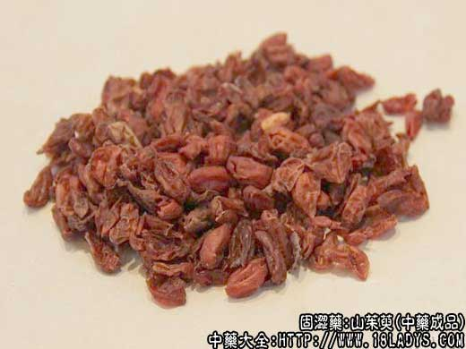
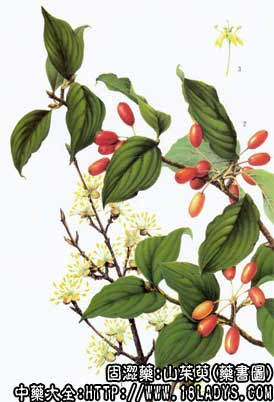

本品为常用中药。始载《神农本草经》，列为中品。
别名：山芋肉、杭芋肉、萸肉、枣皮、山萸。
来源：为山茱萸科落叶小乔木山茱萸得果实，经加工除去果核后的干燥果肉。
产地：主产于浙江、河南、此外安徽、陕西、湖北、山西、四川等省亦有生产。
采收加工：秋末霜降后采摘，如不经霜打采摘过早，则肉质较薄颜色不鲜，采回核果放沸水中稍煮片刻，或放蒸笼内蒸数分钟，至果皮果核易于脱离为度，捞出稍晾或浸入冷水中，趁湿用手捏挤去掉果核后将果肉晒干、或烘干即可。也可将核果放竹笼上用炭火烘焙，焙熟后挤去果核，再用火焙干。浙江淳安地区多用此法加工，制成的芋肉，颜色红、肉较厚、品质较好。
性状鉴别：果肉扁薄皱缩，呈不规格的椭圆形扁片状。长约1.5厘米，宽约1厘米，厚越1毫米。新货枣红色，有光泽，较鲜艳，陈货紫黑色，亦有光泽。肉质，韧性，不易破碎。气微酸，味酸微苦涩。
以片大不碎，颜色鲜艳，无核，肉厚者为佳。
主要成分：含山茱萸甙、没食子酸、酒石酸、苹果酸及维生素A类物质。
药理作用：温补肝肾、敛精血。其作用为滋养、收敛；另有抗菌作用，体外试验对绿脓杆菌和金黄色葡萄球菌有抑菌作用；对多种皮肤癣菌有不同程度的抑制作用。
附：曾有报道谓山茱肉在动物实验中有显著利尿作用，这与中医临床经验认为山萸肉有固涩小便（抗利尿）的功效恰好相反，在实验上和在临床观察上对这问题都值得进一步研究。
炮制：黄酒拌后蒸6～8小时。
性味：酸、涩、微温。
归经：补肝肾、涩精、止汗。
主治：腰膝酸痛、眩晕耳鸣、阳痿、遗精、月经过多、虚汗过多等症。
临床应用：主要用于肝肾不足而有滑脱证候者。
（1）可治肾虚（阴虚和阳虚），故左归饮（补肾阴）、右归饮（补肾阳）均用山萸肉，对有小便频数、夜尿、头晕耳鸣、腰膝酸痛者尤为适用，常配熟地黄、淮山药等，方如六味地黄汤；治肾虚所致的阳痿、早泄，则配金樱子、鹿角胶、补骨脂等或用右归饮。 对肝肾不足所致的高血压，也可用山萸肉，常配杜仲、石菖蒲、鸡血藤等。
（2）治崩漏、月经过多而属气血虚弱者。但单用力薄，需重用和配炭类止血药，才能取效（著名之固冲汤即重用山萸肉），也可配熟地、升麻、益母草、阿胶等。
（3）用于止汗，尤其是亡阳而汗出不止，有良好效果。
对自汗（日间自行发汗，与睡眠、劳动、气候无关，多由阳虚所致），配益气药，如黄芪、党参等。
对盗汗（在睡中汗出，多由阴虚所致），配养阴补血药，如当归、熟地、丹皮，白芍等，方如当归六黄汤。
对大汗虚脱、四肢冰冷，山萸肉为常用之药，单味重用至30～60g浓煎，配五味子、党参则更好，如病情发展至属于亡阳大汗，厥逆休克，则需配人参或党参、附子、龙骨、牡蛎。
（4）治心腹疼痛而有肝肾不足表现者。本品在固涩之中又兼具条达（疏通、理气、镇痛）之性，也用于治肝虚所致的心腹疼痛。
附：本品虽补力较强，但药性平和，敛正气而不敛邪气，又能流通血脉，有利于解表。
使用注意：小便不利者不宜服。
用量：常用量3～9g，救治虚脱时，用60g，甚至120g。
处方举例：
（1）六味地黄汤：（见熟地项下）
（2）右归饮：（见附子项下）。
（3）左归饮（《景岳全书》）：山萸肉3g，熟地30g，杞子6g，淮山药12g，炙甘草3g，水煎服。治肾阴不足，虚火上炎、口燥盗汗、腰酸腿酸。
注：
（1）云南省曾使用鼠李科滇刺枣（酸枣）的果皮，在省内代山茱萸使用。
（2）四川省德昌、会理得部分地区以蔷薇科植物雕刻樱的果皮作上枣皮使用。